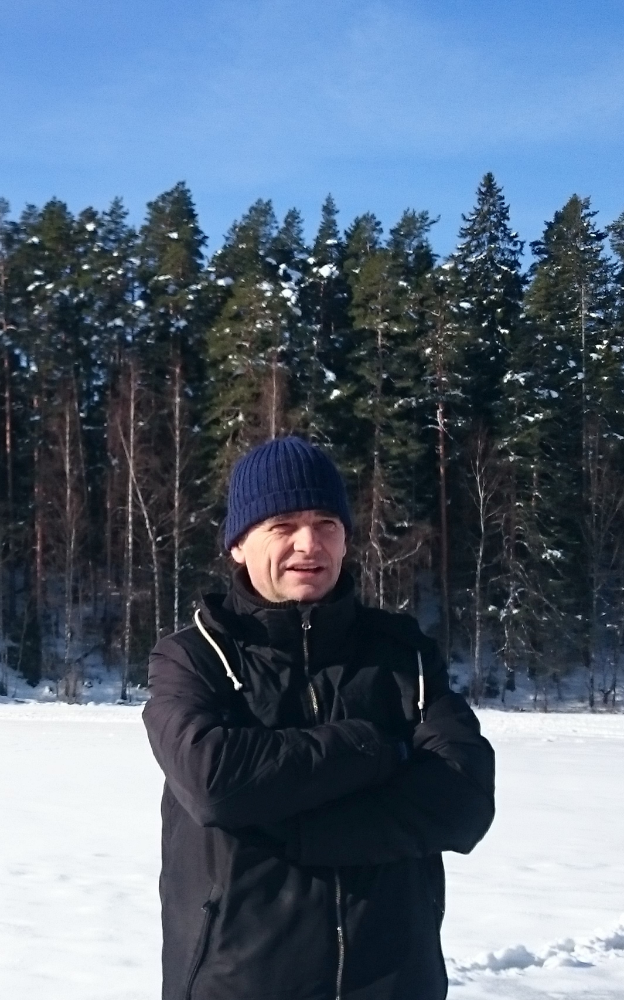

World Logic Day 2021 in Tallinn

Herman Geuvers (Radboud University and Technical University Eindhoven)
"Deriving Derivation Rules from Truth Tables: Classically,
Constructively and Proof Reduction"
Date: 14 January 2021
Time: 14:00 Tallinn time (GMT+2)
Zoom link: to appear on 14 January
Abstract:
We have developed a general method for deriving natural deduction
rules from the truth table for a connective. The method applies to
both constructive and classical logic and it produces derivation rules
of a generic form that lend themselves well to proof-theoretic
investigations, abstracting from the specific choice of connectives.
We have defined the notion of "detour conversion" (or ``cut'') and
"permutation conversion" for the constructive connectives. For the
well-known connectives, like 'and', 'or', 'implication', 'negation',
the constructive rules we derive are equivalent to the natural
deduction rules we know from Gentzen and Prawitz, both in terms of
logical derivability and in terms of proof reductions. However, our
rules have a different shape (closer to the ``general elimination
rules'' by Von Plato, but more general than those). For the
constructive rules, we also have completeness with respect to a Kripke
semantics, which emphasizes that also for the connectives that are not
known as constructive, like 'nand' and 'if-the-else', we really have
constructive rules.
In the talk I will give an overview of our work on this topic, by
first introducing the method and relating it to standard natural
deduction. Then we will analyze detour conversion and permutation
conversion in general for the constructive rules. Following the
Curry-Howard isomorphism, we assign proof-terms to deductions and we
study conversion of derivations as term reduction. We will prove
strong normalisation for the union of detour conversion and
permutation conversion, for any set of constructive rules. If time
permits, we will look into ongoing work on proof-reduction for
deductions in the classical variant of the logic.
Joint work with Tonny Hurkens and Iris van der Giessen